←
Washington Home Price Analysis
Presented by: Bladimir Nunez
Last Updated: February 26th, 2024
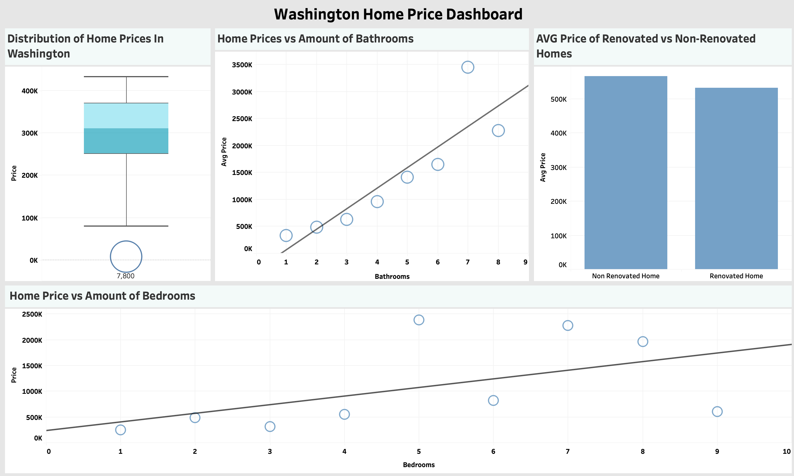
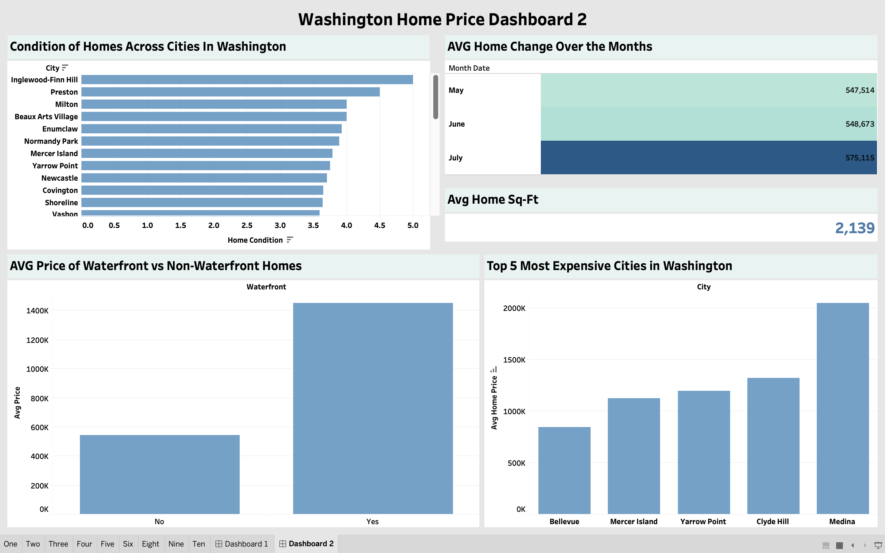
Project Overview
I was curious about the housing market in Washington so I came across
a dataset that was from 2014. This dataset contains listings of homes
in diffrent cities across the state of Washington from May-July. In
this project I was able to find insights such as how the pricing of
homes differed due to what it contained such as amount of rooms or if
the home was renovated, would that make a home more expensive? All
questions and visuals are below.
Visit GitHub Code!
Visit First Tableau Dashboard!
Visit Second Tableau Dashboard!
Exploratory Data Analysis (EDA)
1. What is the distribution of home prices in Washington?
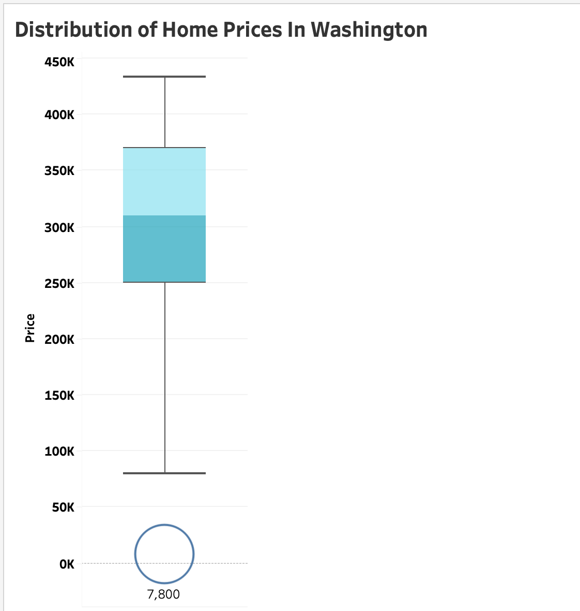
The first question I wanted to answer was to analyze the distrubution
of home prices in the state of Washington. I began by using a boxplot
here that shows the distrubution of home prices. The circle that is
showed is an outlier and this signifies the cheapest priced home in
Washington that is at $7800. The first line above this circle is the
minimum line and this shows that the minimum home price in our data is
around $80,000. The blue box you see is the interquartile range and
starting from the bottom is the lower quartile and the middle is the
median. The top of the box is the upperquartile while the line at the
top is the max value. I find here that the median price of homes is a
little more then $300,000 while the max is north of $440,000.
2. How does the number of bedrooms correlate with home prices?
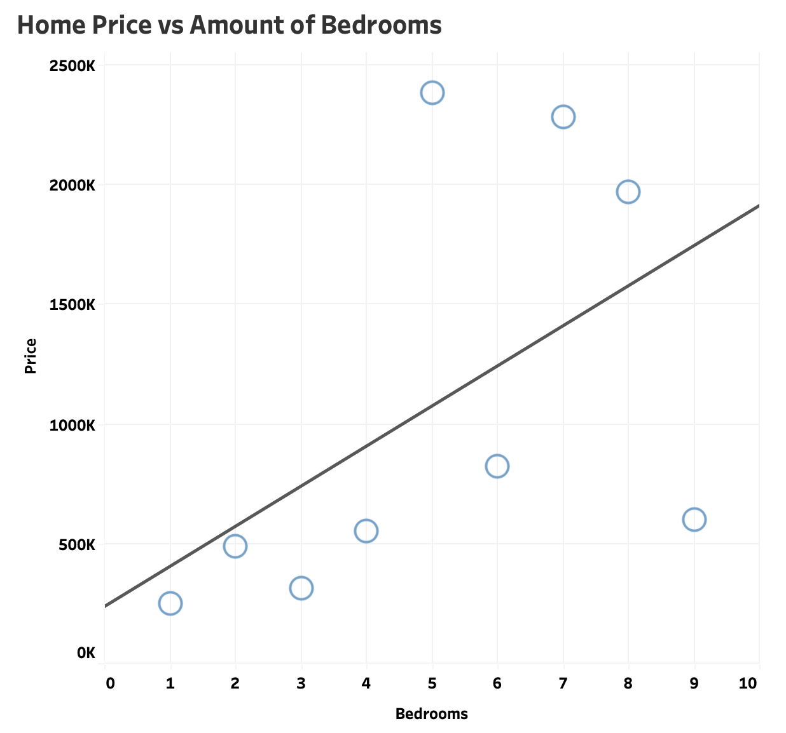
In this visual I use a scatter plot to see if there is a correlation
between the price of a home and the number of bedrooms it has. A
scatter plot is used to plot two variables and see if one variable
will make the other go up or vice versa. In this case the two
variables are bedrooms and home price. I analyze here that if a home
continues to have more bedrooms then the price of that home will
increase. The trend line is continuing to go up as the amount of
bedrooms increases proving the price of the home will also go up.
3. What is the average square footage of living space in homes?
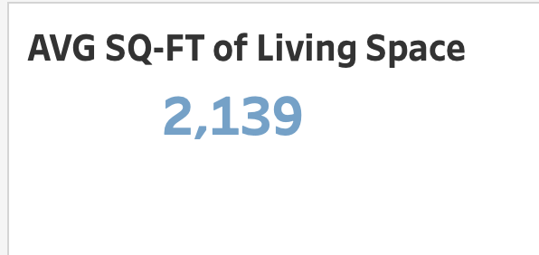
The average square feet of homes in the state of Washington is
2,139ft.
4. Is there a correlation between the number of bathrooms and home
prices?
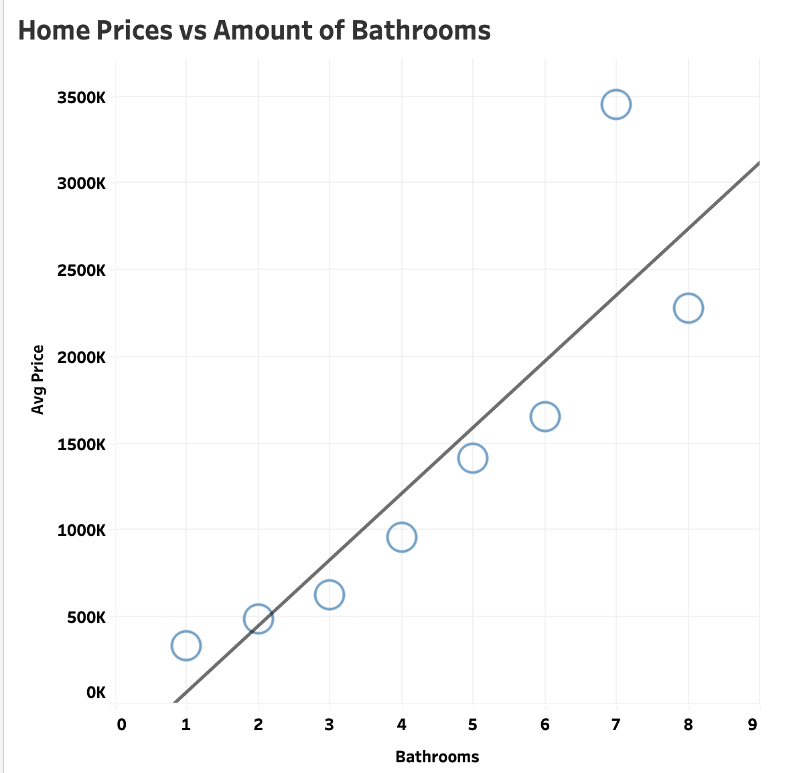
Again I use a scatter plot to show the correlation between amount of
bathrooms and home price. As you see with the trend line going up we
analyze that the more bathrooms a home has the price of the home will
increase so these two variables have a strong correlation.
5. How does the condition of homes vary across different cities in
Washington?
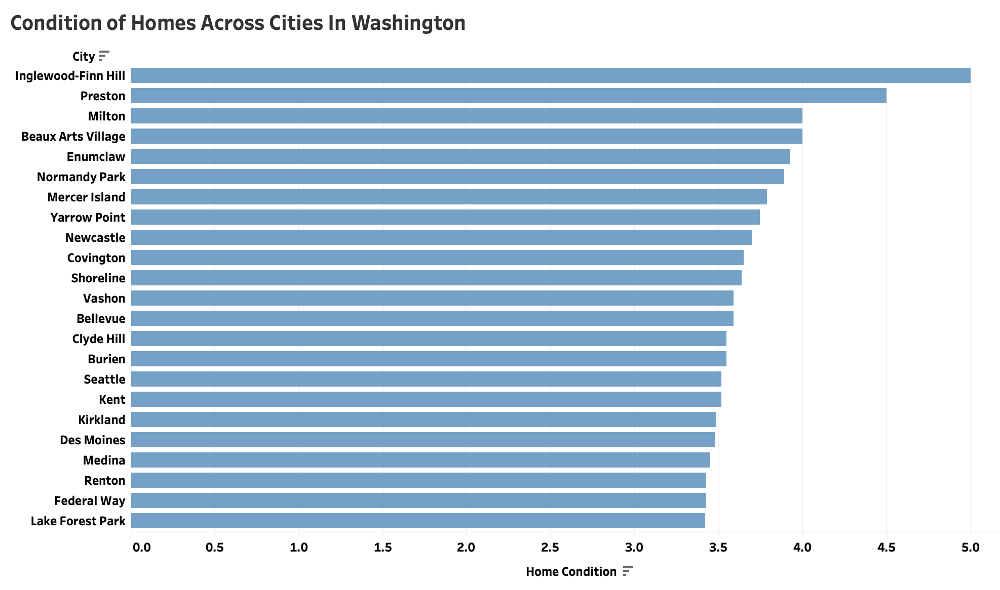
In this visual I use a bar chart that is used to compare numerical
values of objects. Here I use the bar chart to compare each cities
home condition to each other. I find that the city of Inglewood-Finn
Hill has the highest average home condition of 5 which is the best
home condition while the city of Snoqualmie Pass is at 3 which this
being the lowest home condtion of all cities in Washington.
6. Are renovated homes priced higher than non-renovated ones?
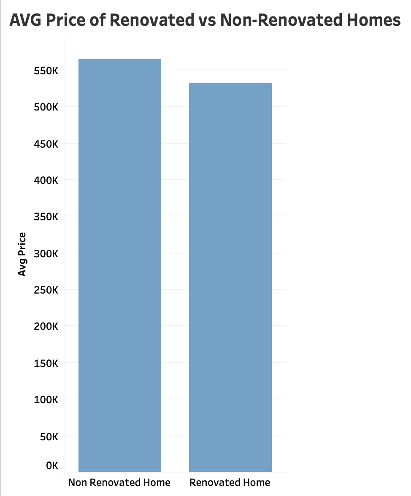
I use another bar chart here to compare average price of non-renovated
homes and renovated ones. I find that homes that have not been
renovated are higher in price then to ones that are.
7. Is there a difference in prices between waterfront and
non-waterfront properties?
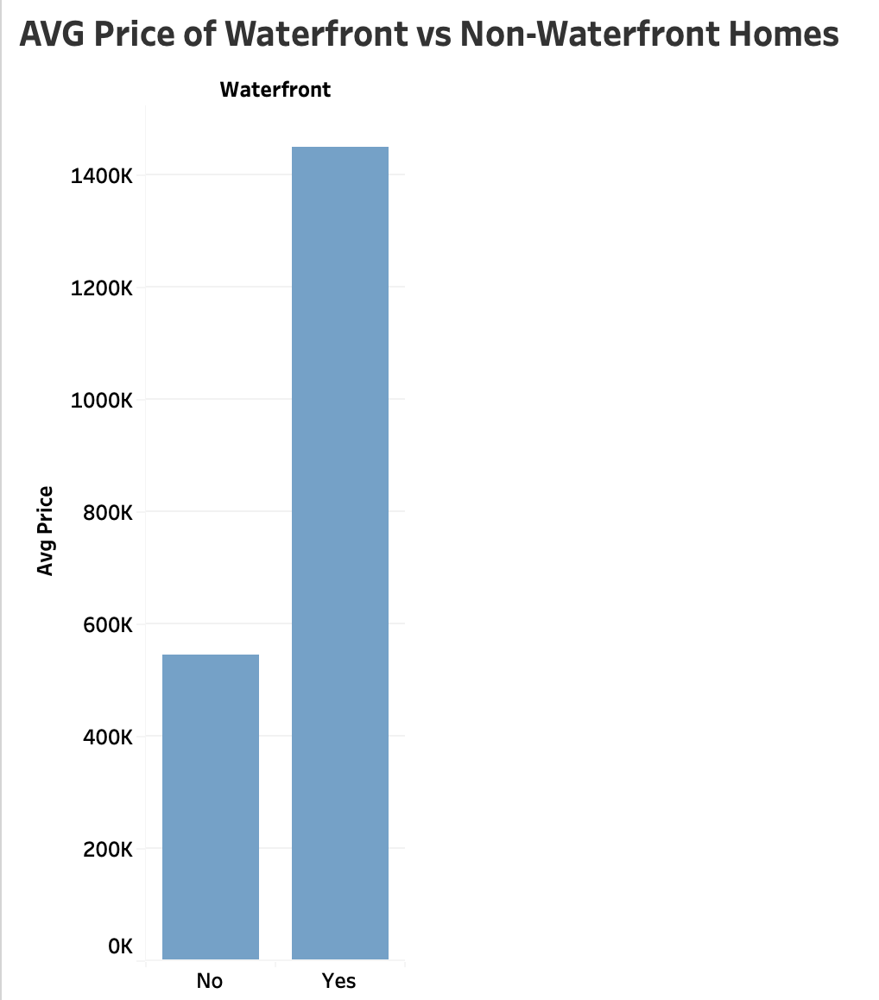
Another bar chart is utilized to show average price of homes that have
a waterfront and those that do not. Here we visualize that homes that
have a waterfront are double the average price of homes without one.
8. How has the average home price changed over the months?
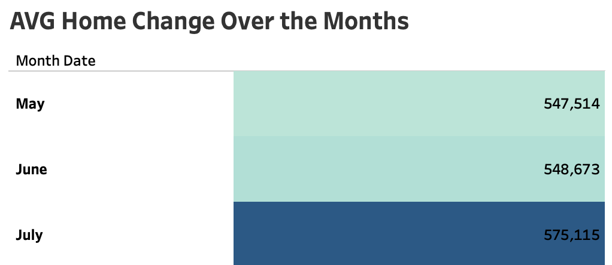
I wanted to analyze the difference in home price from the months
available so this visual shows that May was the lowest average home
price while June was the highest at $575,115
9. What cities have the highest average home prices?
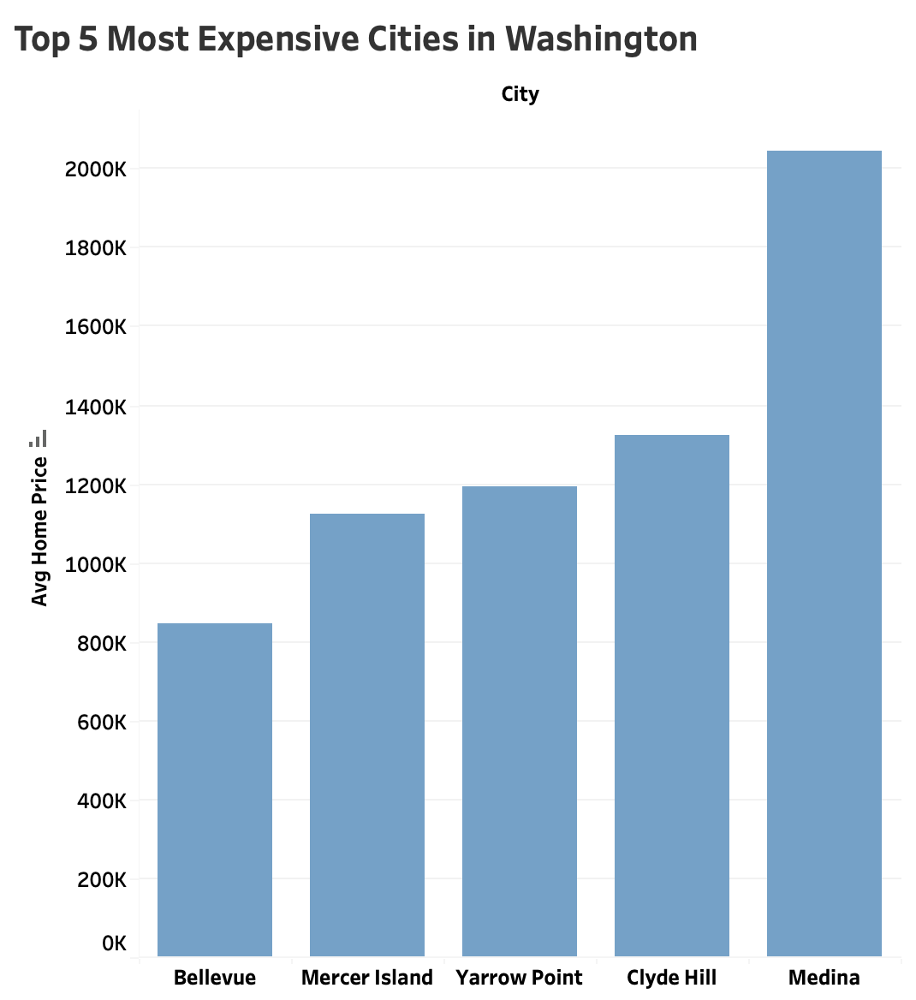
I visualize the top 5 most expensive cities in Washington. I found
that Bellevue, Mercer Island, Yarrow Point, Clyde Hill and Medina are
the most expensive cities with Medina being at the top with an average
price of $2,000,000.
Insights
- Homes with more bathrooms/bedrooms are higher in price
- Non-Renovated homes are priced higher then renovated ones
-
Homes with a waterfront are priced higher then homes without
waterfront
-
Top 5 most expensive cities do not have the highest home condition
- Month of July had the highest average price of homes sold
Data Sources
I obtained this washington housing dataset from
DataSet
This Github contains 200+ datasets that can be used to practice and
build skills in data analysis. Thank you to the author for putting it
together.
Technologies Used
Excel: Data Cleaning/Preparation
SQL: Analysis
Tableau: Data Visualization
Data Cleaning/Preprocessing
I used Microsoft Excel for the cleaning and preparation of my dataset.
Remove Duplicates and handle missing values. Change data types of
numeric data into integers. Split data into new columns for
readability and Remove extra wording from columns
Feature Engineering
As I started to clean my dataset I had a date column that was in the
format of "m/d/yyyy 00:00:00 AM". I removed the timestamp from the
date column and then split the date into seperate month, day, year
columns. I dealt with another column that contained zip code and state
name together so I split those up into there own columns for
readability.
Data Analysis
`select round(avg(price),2) as renovated_home, (select
round(avg(price),2) from homes where yr_renovated = 0) as
non_renovated_home from homes where yr_renovated != 0;`
Challenges
One challenge I faced during the cleaning process was with the
'yr_renovated' column. Rows had the year that the home was renovated
but also it contained zeroes and that indicated that the home was not
renovated. For readability I wanted to change those zeroes to NULL to
indicate to the users that the home was not renovated. I struggled to
change those zeroes to the NULL value in excel during the cleaning
process. I believe more studying into excel will help me find the
answer. As for a solution during analysis with SQL and visualization
with Tableau I filter out the the zeroes from the 'yr_renovated'
column when I am working with it so it is not interpreted that the
home was renovated at year 0 nor it impacts the analysis by distorting
the results.